Overview
Bezier curves and surfaces are mathematical constructs used to define smooth curves and surfaces. I interpolated values based on given control points that make smooth curves along the control points. I used the method of recursively getting a point between pairs of control points until there is one point left to interpolate the values. And implemented Bezier surfaces by using two parametric variables that define the location of an interpolated point on the surface. I implemented Phong shading by calculating the normal vectors to each vertex by adding up weighted vectors normal to the surfaces in touch with the vertex. This allowed for smoother and more realistic shading. Mesh flipping involves changing the end vertices of the edge that touches two triangles to the vertices opposite to the edge, while mesh splitting involves adding a new vertex and splitting an existing edge into two, connecting the new vertex to all four points. For flipping this was done by taking the halfedge to be flipped and making it point to different halfedges and updating the corresponding halfedges as well. For splitting this was done by deleting the original halfedge and making two new ones and a vertex that connects these two other vertices. These techniques can be used to improve the connectivity of a mesh. This can help with operations such as subdivision. Then I implemented loop subdivision which is a technique used for mesh upsampling. It increases the density of a mesh while maintaining its shape. This is accomplished by iteratively subdividing each face of the mesh into smaller faces, and adjusting the positions of the vertices based on the positions of neighboring vertices. The algorithm was to calculate the new positions of the old and new vertices and save it for later. Then, split all of the edges and flip some of the new edges so that it only connects new edges. Then, updating the vertices to its new positions.
Section I: Bezier Curves and Surfaces
Part 1: Bezier Curves with 1D de Casteljau Subdivision
Briefly explain de Casteljau's algorithm and how you implemented it in order to evaluate Bezier curves.De Casteljau's algorithm is an algorithm for evaluating Bezier curves. It is a recursive algorithm that allows us to compute the coordinates of the curve at any point along its length. The algorithm starts with a set of control points that define the shape of the curve. It then recursively computes intermediate points between each pair of adjacent control points by linearly interpolating between them at a specific parameter value. These intermediate points are then used as control points for a smaller Bezier curve, and the process is repeated recursively until a single point is obtained. This final point represents the coordinate of the Bezier curve at the given parameter value
To implement this I implemented a function that evaluates one step of the algorithm where it finds the point between each pair of control points according to the parameter, t. The point in between pairs was calculated using p_new = p1 * t + p2 * (1 - t). This function takes in a list of control points and outputs a list of new points that has the size of the original - 1. Then recursively apply this function to the output until you get one point.
Take a look at the provided .bzc files and create your own Bezier curve with 6 control points of your choosing. Use this Bezier curve for your screenshots below.
Show screenshots of each step / level of the evaluation from the original control points down to the final evaluated point. Press E to step through. Toggle C to show the completed Bezier curve as well.

|
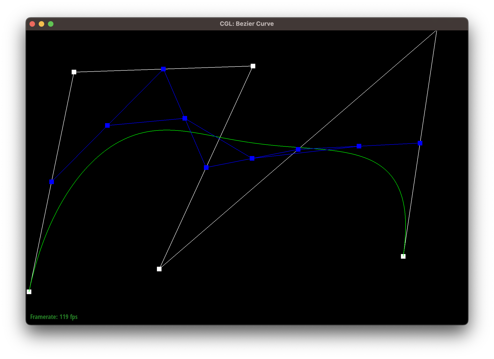
|
|
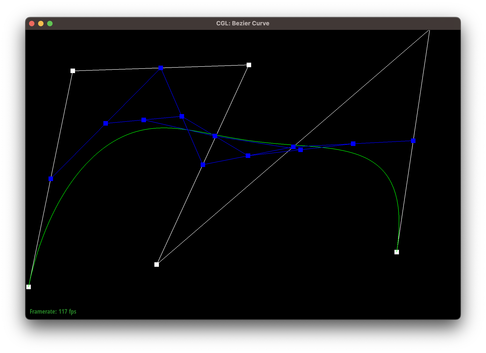
|
|
|
|
Show a screenshot of a slightly different Bezier curve by moving the original control points around and modifying the parameter \(t\) via mouse scrolling.
Part 2: Bezier Surfaces with Separable 1D de Casteljau
Briefly explain how de Casteljau algorithm extends to Bezier surfaces and how you implemented it in order to evaluate Bezier surfaces.A Bezier surface is represented by a grid of control points. In order to find a point on the surface, we start by applying the de Casteljau algorithm to each row of control points to obtain a new set of points that form a curve. Next, we apply the de Casteljau algorithm to this set of curves, which gives us a single point on the surface. Essentially, we break down the surface into smaller curves, and then evaluate those curves to obtain the final point on the surface. By doing so, we can determine the position of any point on the Bezier surface using only the control points that define it.
To implement this I implemented a helper function that fully evaluates the point on the curve defined by the rows of the grid, using parameter u. Then, taking the output, which is a list the same size as the number of rows, evaluate the point using parameter v. This yields a unique point on the bezier surface.
Show a screenshot of bez/teapot.bez (not .dae) evaluated by your implementation.
Section II: Triangle Meshes and Half-Edge Data Structure
Part 3: Area-Weighted Vertex Normals
Briefly explain how you implemented the area-weighted vertex normals.First, I iterated through all halfedges that the vertices were touching. For each halfedge, I took the its face to get vertices a, b, c of the face. I took the cross product of b - a and c - a which yields a vector normal to the face with a magnitude twice of the area of the face. Taking all of the calculated normal vectors I added them up and divided its elements by the magnitude of the vector to make it a unit vector.
Show screenshots of dae/teapot.dae (not .bez) comparing teapot shading with and without vertex normals. Use Q to toggle default flat shading and Phong shading.
|
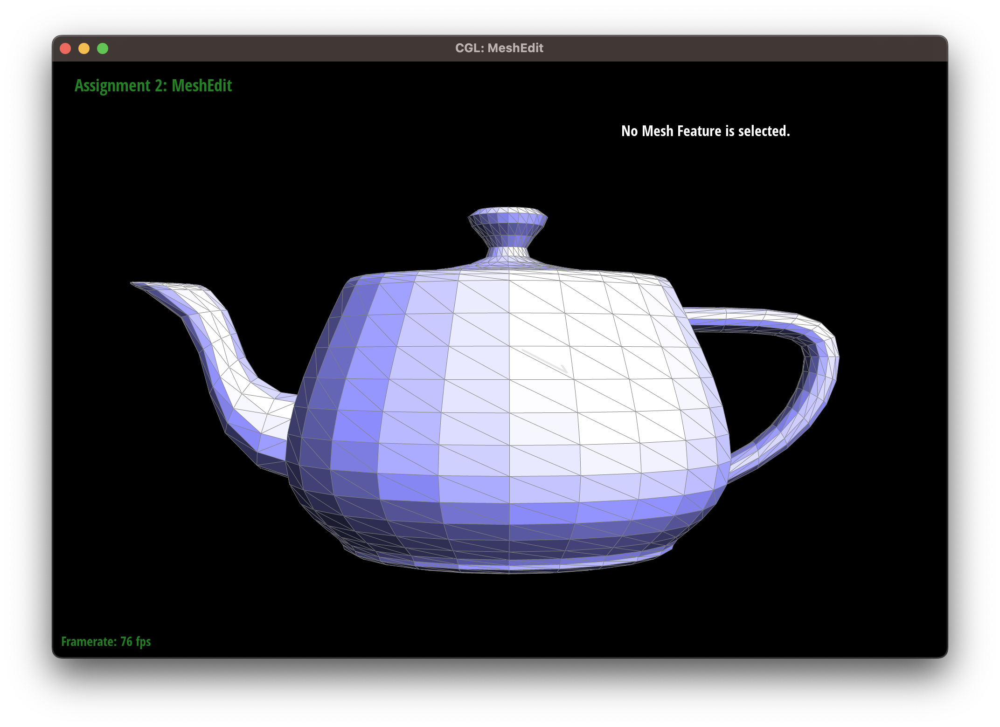
|
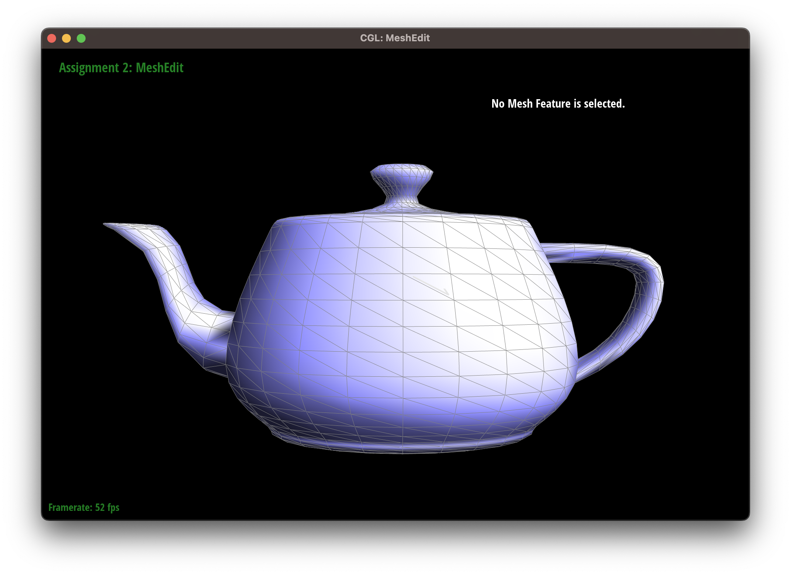
|
Part 4: Edge Flip
Briefly explain how you implemented the edge flip operation and describe any interesting implementation / debugging tricks you have used.I first saved the pointers to the vertices of the mesh and the edges of the mesh. Then I set the pointers of the halfedge that was getting flipped to point to the next halfedge of what they were originally pointing to and set the members of the other halfedges accordingly. This essentially rotated the halfedges on the edge being flipped. I used all of the pointers I stored before the operation to change the halfedges that the vertices/edges will now point to. One trick I used was to reuse the original halfedge and its twin that was getting flipped instead of deleting it and making a new one to avoid dealing with with problems such as losing reference to an halfedge but not deleting its memory.
Show screenshots of the teapot before and after some edge flips.
|
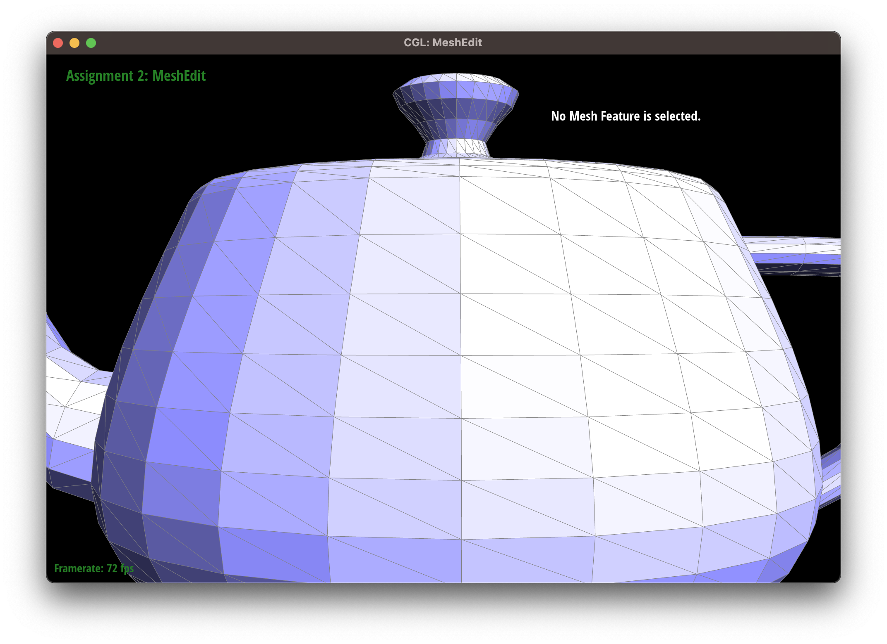
|
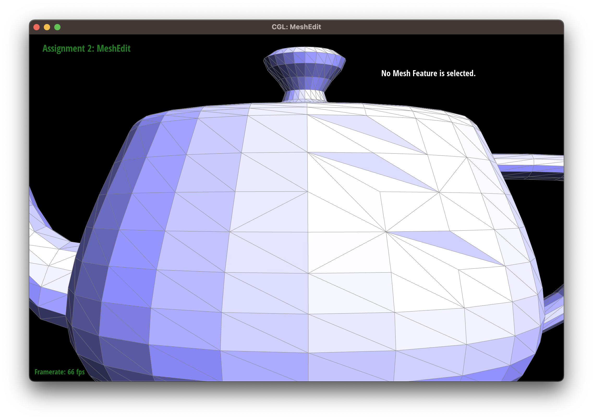
|
Write about your eventful debugging journey, if you have experienced one.
YOUR RESPONSE GOES HERE
Part 5: Edge Split
Briefly explain how you implemented the edge split operation and describe any interesting implementation / debugging tricks you have used.I first saved references to all of the halfedges, vertices, and edges from the original mesh. Then I calculated the midpoint of the edge that was to be split and created the midpoint as a vertex. Then, I created edges and halfedges that connect this midpoint to all of the original vertices. I deleted the original edge that was now split. I created 4 new faces since the new edges split the two faces into four. I deleted the old halfedges and faces. Then I set all of the new halfedges in order using the setNeighbors function. I set the faces, vertices, and edges to point to its corresponding halfedges. I marked the new edges as isNew for the next problem (but not the split edges). I returned the midpoint. One trick in coding this portion was to delete objects right before creating new ones to make it easy to debug.
Show screenshots of a mesh before and after some edge splits.
|
|
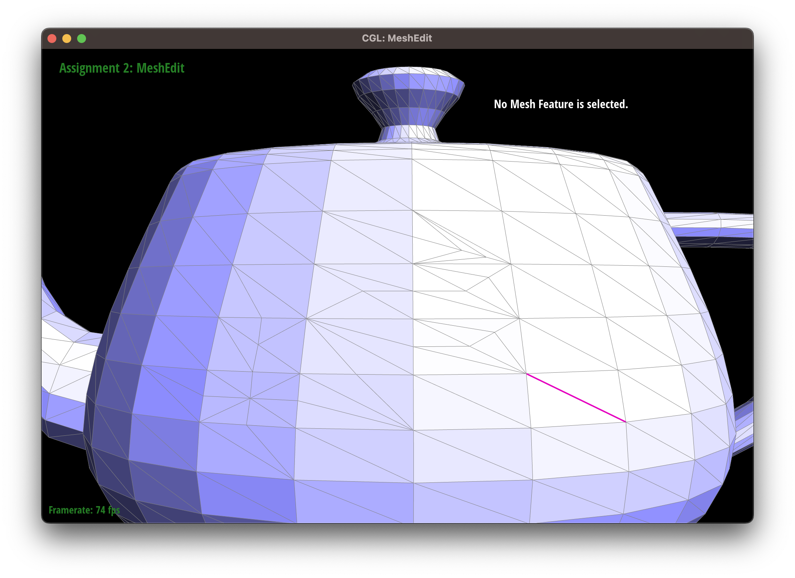
|
Show screenshots of a mesh before and after a combination of both edge splits and edge flips.
|
|

|
Write about your eventful debugging journey, if you have experienced one.
YOUR RESPONSE GOES HERE
If you have implemented support for boundary edges, show screenshots of your implementation properly handling split operations on boundary edges.
YOUR RESPONSE GOES HERE
Part 6: Loop Subdivision for Mesh Upsampling
Briefly explain how you implemented the loop subdivision and describe any interesting implementation / debugging tricks you have used.
1. I iterated all of the edges and calculated the position of the new vertex to be on the edge after the split operation
2. I iterated all of the vertices to calculate their new positions
3. I iterated all of the edges to split the edges if the edge 1) was not on the boundary 2) had at least one newly created vertex which means that the edge is not from the original mesh but newly created which we should not split. I marked the new vertex from the split as isNew and updated the newPosition from the newPosition of the edge that was split which is where we stored the new positions from step 1.
4. I flipped all edges where 1) one vertex is new and the other is not and the edge is new to make it so that the new edge connects two newly created vertices
5. I updated the positions of all vertices to their newPositions and reset the members of the vertices and edges.
Take some notes, as well as some screenshots, of your observations on how meshes behave after loop subdivision. What happens to sharp corners and edges? Can you reduce this effect by pre-splitting some edges?
|
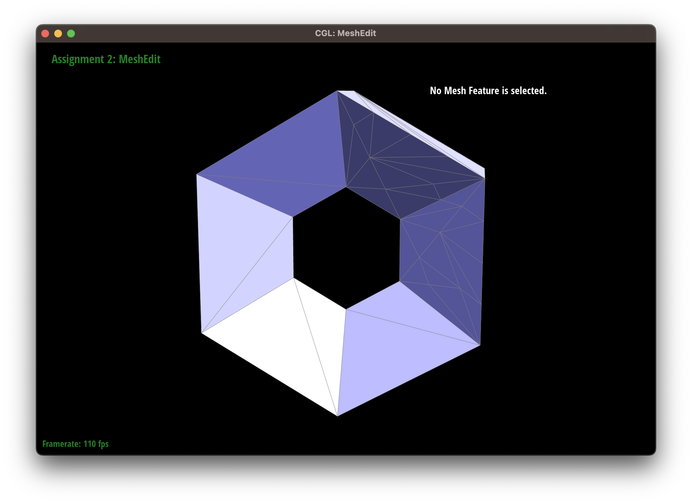
|
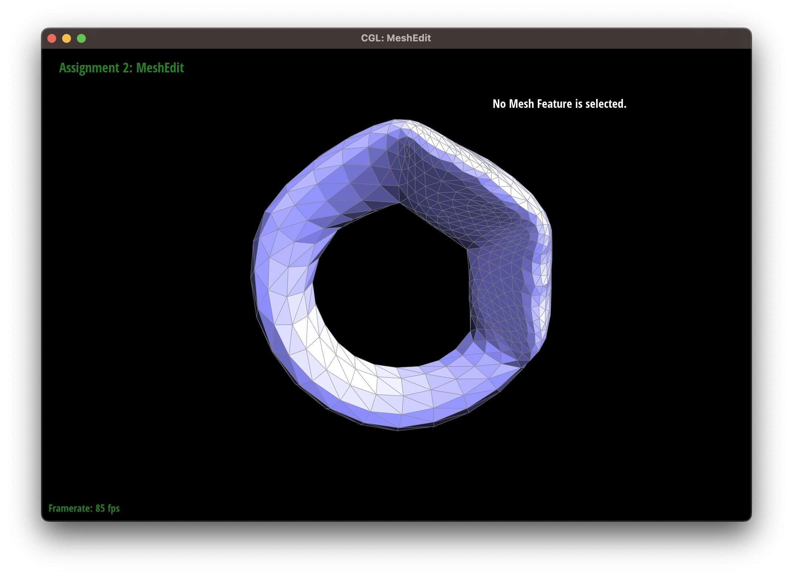
|
When applying Loop Subdivision to a mesh, the new vertices are generated based on the existing edges of the mesh. Adding more edges to the mesh before applying Loop Subdivision will provide more opportunities for the new vertices to be placed in more precise locations. This means that by adding more edges, you can better control the amount of smoothing that occurs in the mesh, resulting in less loss of sharpness. Adding more edges provides more control over how the mesh is subdivided and smoothed, allowing for more precise adjustments to be made. Pre-splitting creates more vertices and edges, resulting in a smoother overall shape.
Load dae/cube.dae. Perform several iterations of loop subdivision on the cube. Notice that the cube becomes slightly asymmetric after repeated subdivisions. Can you pre-process the cube with edge flips and splits so that the cube subdivides symmetrically? Document these effects and explain why they occur. Also explain how your pre-processing helps alleviate the effects.
|
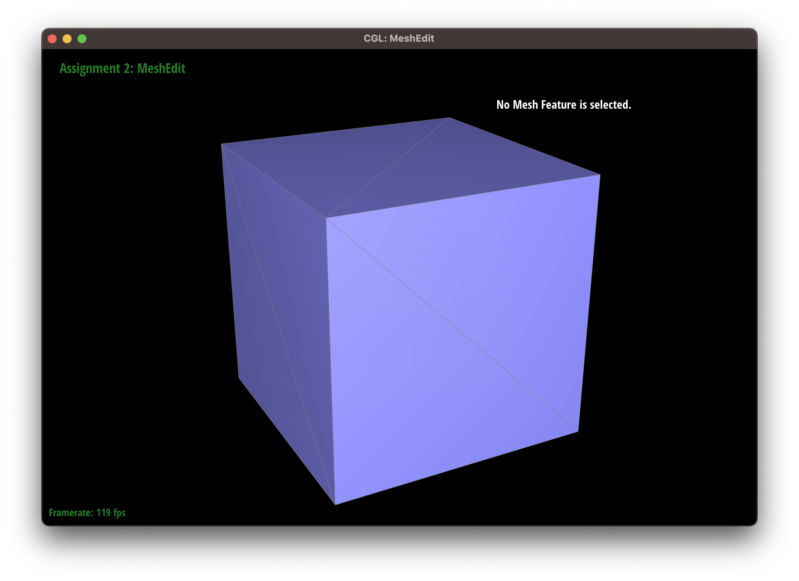
|
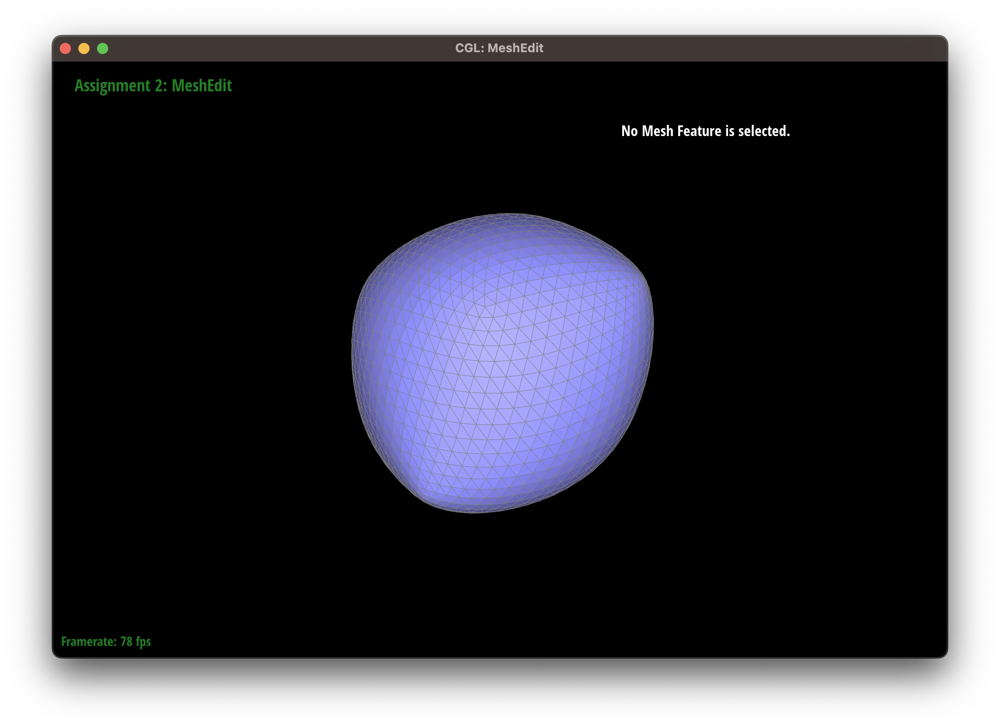
|
|
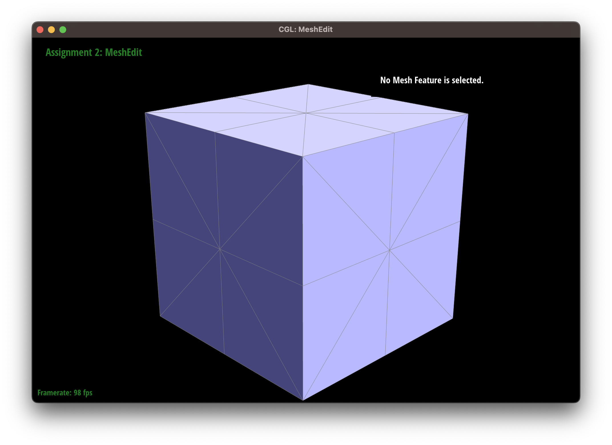
|
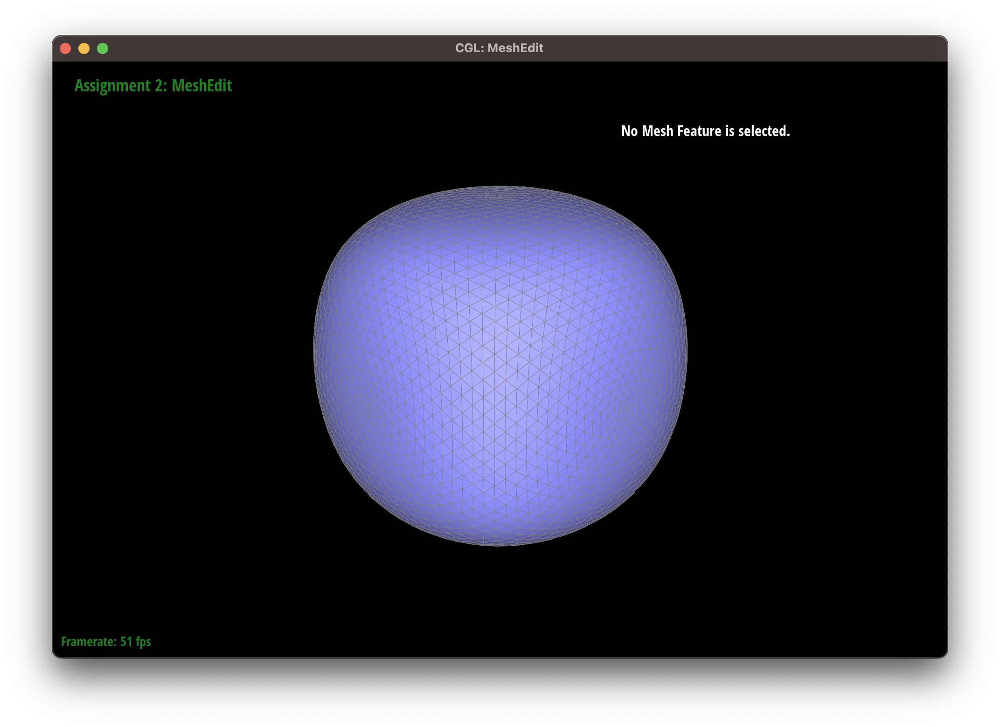
|
To pre-process the cube with edge flips and splits so that it subdivides symmetrically, we can add more edges to the mesh in a symmetrical pattern. So, I split the edges on the six sides of the cube which made the edges on the six sides form an X shape. This will distribute the newly generated vertices more evenly across the mesh, resulting in a more symmetrical subdivision.
If you have implemented any extra credit extensions, explain what you did and document how they work with screenshots.
YOUR RESPONSE GOES HERE
Part 7 (Optional, Possible Extra Credit)
Save your best polygon mesh as partsevenmodel.dae in your docs folder and show us a screenshot of the mesh in your write-up.YOUR RESPONSE GOES HERE
Include a series of screenshots showing your original mesh and your mesh after one and two rounds of subdivision. If you have used custom shaders, include screenshots of your mesh with those shaders applied as well.
YOUR RESPONSE GOES HERE
Describe what you have done to enhance your mesh beyond the simple humanoid mesh described in the tutorial.
YOUR RESPONSE GOES HERE